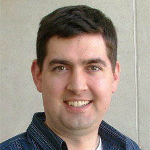

Prof. Doug Downey
Directior at Allen Institute for AI and Professor Northwestern University

Prof. Graham Neubig
Associate Professor at the Carnegie Mellon University and Chief Scientist at All Hands AI
Dr. Yunyao Li
Director of Machine Learning at Adobe Experience Platform

Prof. Yoav Artzi
Associate Professor at Cornell Tech
Prof. Manling Li
Assistant Professor at Northwestern University

Dr. Hongming Zhang
Senior Research Scientist at Tencent AI Lab
- © All rights reserved
- Design: HTML5 UP